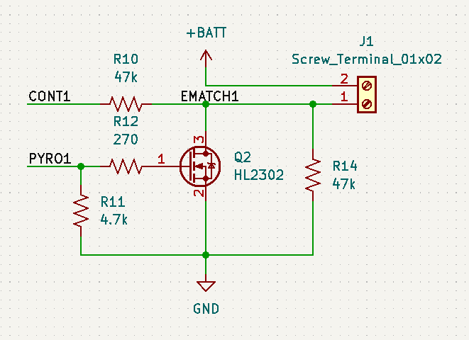

NanoDeploy
This project represents one of the most thorough nerd snipes I've fallen victim to in quite a while.

xkcd.com, used under CC BY-SA 2.5
The catalyst for this project is a discussion in the r/Rocketry discord server, where it was noted that it might be interesting to attempt to fly dual deploy - a rocket design where a small drogue parachute is deployed at maximum altitude, followed by a larger chute after the rocket has descended some distance - in an extremely small rocket.

Image credit Apogee Rockets; this rocket is 4 inches in diameter, a fairly normal size for this technique
The main obstacle to this (other than its lack of any kind of practical use) is the size of altimeters. Most commercial deployment altimeters are designed for tubes in the 1.25 - 1.5" diameter range, which is where dual deployment starts to make actual sense as a way to reduce recovery area. At the time of writing, the just-released Featherweight Blue Jay is one of the smaller dual-deployment altimeters, and while it claims to fit in as small as 3/4" tube, actually wiring it for deployment at that scale is extremely difficult.
This project throws all caution to the winds, and attempts to fit a full dual-deployment altimeter in a 1/2" tube. This will come with many pitfalls and compromises, but it is for the noblest possible goal: commitment to the bit.
Assembly concerns
1/2" tube is really, really small. Usually, I try to use hand-solderable components for as much as I can, but that's not an option here; everything here will be size-constrained without much room for slack. For this reason, this project will be designed around professional pick-and-place assembly, in this case from JLCPCB. This brings up a significant obstacle - the JLC parts library.
As someone used to the relatively well-structured parts catalog of Digikey, JLC's is... a little frustrating. For example, let's say I wanted to spec an LED for my board. That might be in one of the following categories:
- Optocoupler/LED/Digital Tube/Photoelectric Device > Light Emitting Diodes (LED)
- Optocouplers & LEDs & Infrared > Light Emitting Diodes (LED)
- Optoelectronics > Light Emitting Diodes (LED)
- Optoelectronics > LED Indictaion - Discrete
- Photoelectric Devices > Light Emitting Diodes (LED)
- LED/Photoelectric Devices > Light Emitting Diodes (LED)
Inevitably, for any given component, one category is "correct" and contains most of the components you want; the others typically contain 50-100 products that are of the same type, just with worse selection. (In this case, the correct category is the fourth one above.)
Anyway, JLC, pls fix. Soapbox over. Let's build a flight computer.
Core components
The first thing we have to decide is what the core parts of our design are. We have to pick approximately four main parts:
- Processor
- Sensors
- Pyrotechnic outputs
- Data storage
Processor
For the processor, I wanted something that fit in a 4x4mm QFN package. This is about as small as you can get before getting to bare-silicon packages like WLCSP, which even for an automated-assembly project is pretty scary. After scrolling through JLC's parts library for a bit, I decided on the MSP430G2452 from Texas Instruments. This is a pretty limited microcontroller compared to modern ARM chips, but it has a couple advantages that matter here:
- TI's debugging tools are quite good, and I like how their hardware registers are set up
- At only 16 pins, the pin density is not insane by tiny-QFN standards, so if I do need to poke an oscilloscope in there to debug something it's not totally infeasible
- It has a configurable internal oscillator that can be run at up to 16MHz, so I don't need to include an external crystal
- It has a generous 8KB of flash, which should be plenty for the relatively simple programs I'll be writing
However, it also has a couple key disadvantages that I'll have to work around:
- It only has 256 bytes of RAM. Yowch.
- It only has one timer peripheral. This means I can't, for example, use one timer to generate the tone for the buzzer and another to time the flight control loop.
- It only has 10 digital I/O pins, even after we repurpose the pins used for the crystal normally. This means we may have to get creative in how we attach things.
Sensors
To get reliable parachute deployment without doing oodles of math, the main piece of data you need is air pressure. As the rocket ascends, the air pressure around it decreases in a fairly predictable way; we can predict our altitude within a fairly tight margin just by measuring the pressure and temperature outside and punching them into a big formula provided to us by the NOAA. This is how real aircraft determine their altitude, and luckily for us there's a slew of fairly inexpensive sensors that do this very well.
The sensor I ended up with was the GZP6816D from Sencoch Semiconductor, a decision mainly driven by price. There's not much English documentation, but I was able to machine-translate enough that it should't be too difficult to figure out the necessary commands. It also has the convenience that it hasn't (yet) been removed from JLCPCB's budget assembly service like most other barometers have, knocking a good $20 off my prototyping cost.
Pyrotechnics
This is another place where my job was not too difficult. For the pyrotechnics I'm using (MJG e-matches) I need to be able to switch around 1-3 amps at battery voltage, and there are plenty of options that match these specs. I settled on the HL2302 as it's easily available on JLC's assembly library, but almost anything would work here. I considered the slightly more powerful HL2312 here, but the higher performance is actually a little worse here, for reasons I'll discuss in a second.
The other half of the pyrotechnic circuit is continuity and current sensing. For this I used a circuit that is either kinda clever or extremely overthought:

The idea here is that I can use the same pin as both my continuity check and current sensing. If the MOSFET is switched off, then the resistor to ground acts as a simple pull-down: if an igniter is connected, the continuity pin will be pulled high, otherwise it will be pulled low. (The 47K resistor in series helps make sure that the difference between battery voltage and microcontroller voltage doesn't fry the input-clamp diodes. TI rates this at 2 mA, while I shouldn't be exceeding 50 uA.)
When the MOSFET is switched on, the low-resistance path to ground completely overwhelms all other effects in the circuit, and the igniter fires. At this point, it's useful to measure the current passing through the igniter, which is where our lower-spec MOSFETs come in. At 3.3V gate-drive voltage, our MOSFETs should have a resistance of around 50 milliohms, and we can use this as a very crude shunt resistor to determine how much current our igniter is drawing. Quick math tells us that with 1023 divisions between 0 and 3.3 volts, our analog pins should read one "tick" per 3 millivolts across the MOSFET, or 65 milliamps drawn by the igniter. At our nominal firing current of 1 amp, that gives us around 4 bits of precision in our current measurements - plenty to help diagnose any issues.
Storage
Compared to the needlessly complicated mess of the pyrotechnic circuits, the storage is practically a turn-key solution. Because of the shortage of pins on the processor, I need the storage to share the I2C bus with the barometer rather than requiring its own. Traditionally, NOR flash would be the medium of choice here, but there don't seem to be many options for it that don't require an SPI bus. Luckily, the actual data we have to log can be made pretty small, so just a standard 24C-series EEPROM will have plenty of space and write bandwidth, and these days EEPROM write endurance seems to be high enough that we can avoid worrying too much about data loss. I ended up deciding on a 24C128 with 16KB of storage - if we can keep the data frame at 8 bytes, this gives us around 3.5 minutes of runtime at 10 samples per second, and we can always vary our sample rate to squeeze a bit more life out of it.
Interfacing
An important question in this design is how we get data on and off of the flight computer. For programming, we really want to have access to the two-wire debug interface, which looks a lot like SWD but isn't quite (I think), so those get broken out to a header. Conveniently, one of them is also the reset pin, so we can force-reset the MCU if necessary with judicious use of a piece of wire.
User-side interfacing - for configuring the flight parameters and downloading data - is a bit trickier. Originally, I was planning to use the I2C bus as well, by making a dock portion that would present as an I2C device to the processor and allow data to be copied to a computer. However, when I laid this out on the PCB, it turned out that the width of the connector was a major limiting factor in the size of the board. To reach the logical extreme of this project, I wanted to use as few wires to communicate with the computer as possible. So what's the fewest wires you can use? One, of course!
From Wikipedia:
1-Wire is a wired half-duplex serial bus designed by Dallas Semiconductor that provides low-speed (16.3 kbit/s) data communication and supply voltage over a single conductor.
https://en.wikipedia.org/wiki/1-Wire
1-Wire was developed as a protocol for Dallas Semiconductor's iButton project, a product that allowed you to make tiny, low-power devices to be used similarly to NFC smart cards. The idea was you could have an iButton ID chip, thermometer, humidity sensor, timer, or what have you that could be thrown in with a shipment of sensitive material to physically verify that it was shipped correctly. For example, if you had a shipment that had to be delivered within 3 days, you could include a timer button and demand a refund from your parcel carrier if the timer read more than 3 days when you opened the package.
In my case, it's useful mostly for the titular feature of requiring only one connection - rather than separate data and clock signals, data is transferred by long and short low pulses on the data line. This saves one pin on my debug connector, which lets me reduce the length of the board by 1.25 millimeters. A small victory, but a victory nonetheless. In theory, I could also attempt to power the board parasitically via the data line, as was intended by the original standard, but there's no real need for that here - it's just as easy to plumb the 5V power coming from the computer into the battery input and let the system operate as normal.
The main disadvantage of OneWire here (other than its incredibly slow speed) is that the MSP430 doesn't provide any hardware utilities for it as it does for more common protocols like UART and SPI. Therefore, we have to implement the entire protocol by bit-banging, using the processor's pin and timer interrupts to keep track of what is going on... except as mentioned, we only have one timer available. In the end, I ended up using every single available timer interrupt.
First, a rough outline of what the OneWire protocol looks like. OneWire is a single-wire, open-collector bus, so the only thing any device can do to communicate is pull the bus low. Hosts start by pulling the bus low for a very long reset pulse, after which devices respond by pulling the bus low for a short presence pulse to notify the host that there is something on the bus. After the reset is completed, the device and host communicate by issuing shorter low pulses for 1s and longer pulses for 0s. At any time, the host may issue another extra-long pulse to reset all devices and start from the beginning.
In flight mode, everything is handled by the TACCR0 interrupt, which is the only one capable of automatically resetting the timer and the only one that has its own dedicated interrupt routine. This runs at 8KHz to allow it to produce up to a 4KHz tone out of the speaker, and wakes the processor every 200 cycles or 25 milliseconds to record data from the sensors.
As soon as activity is detected on the OneWire bus, the TACCR0 interrupt is switched off and the other TimerA interrupts - which share a single ISR - are switched on. The timer is initially paused, and is started at every falling edge of the OneWire pin. The timer's overflow interrupt is configured to reset the timer counter to 0 and pause it; this makes it work as a quasi-one-shot.
The TACCR2 channel is used exclusively to detect the reset pulse. It is set to just under the 480us pulse length for reset, and if this threshold is reached before the bus goes high, the bus reenters the reset state.
This leaves only the TACCR1 channel to handle all of the OneWire business logic. Luckily, the fact that the timer is consistently synced to the falling edge makes this pretty feasible: most timings in OneWire can be defined relative to the falling edge, so events such as reads and writes can be "scheduled" to happen as needed just by setting the TACCR1 value. The only case where this doesn't work is for generating the presence pulse, as it's located relative to the end of the reset pulse rather than the beginning; however, this can be worked around by simply setting the TACCR1 time to the current time plus an offset whenever the reset pulse ends.
Back to Top